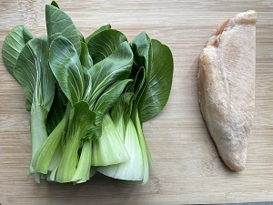
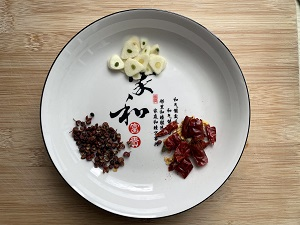
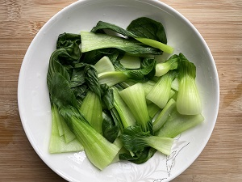
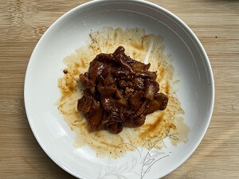
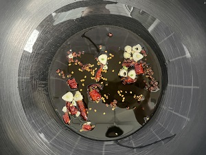
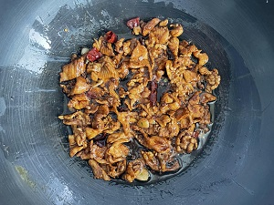
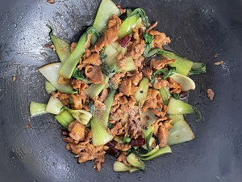
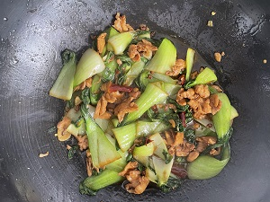

< Back青菜炒肉2020-10-31食材用料食材数量青菜150克-200克鸡胸肉半块（约120克）油适量蒜适量辣椒圈适量盐适量生抽适量老抽适量胡椒粉适量食材皆为一人食量，如果多人只需加 青菜 和 鸡胸肉 即可。做法步骤图片步骤1.准备食材2.蒜切末，和辣椒圈装起来3.青菜洗净焯水4.水煮开捞起装盘5.鸡胸肉切成片，加水化冻去血水6.挤掉水7.加入生抽、老抽、胡椒粉、淀粉8.搅拌至粘稠9.放油中火，放入肉片翻炒至肉熟10.放入蒜和辣椒圈爆香11.翻入青菜翻炒12.放入肉片、盐简单翻炒两下入味13.装盘